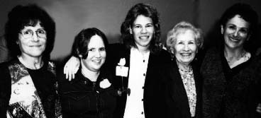

| HOME | SITE MAP |
(Quotes are excerpts from comments made at the still here celebration.)
|
Original Owners: left to right Simone Wallace, Adele Wallace, Gahan Kelley |
|
|
"We have been through the debates and the backlashes, and we have seen a new generation of strong, confident young women benefit from our battles.... It's been a slow, tough fight but it's also been an awfully good time. Which is why for as long as it takes we'll still be here."—Adele Wallace |
"I especially want to thank all of you for supporting Sisterhood, both Sisterhood the Bookstore and Sisterhood the Feminist Concept.... Thank you for writing, thank you for reading and thank you for having your hearts and heads committed to feminism. I'm proud to be a feminist and I feel incredibly lucky to have spent this much of my adult life as part of this community.... Sisterhood grew out of our political work. We began our venture at a time when the words 'business' and 'career' were part of an establishment which we were anti. I'm proud to have been part of those years of the late '60s and '70s when our energy and political convictions were high and we were part of a dynamic, exciting movement."—Simone Wallace |
|  |
Present Owners with Family: left to right Adele Wallace, her daughter Amanda Wallace, Emily Gold (Simone's daughter), Faye Wallace (Simone's mother and grandmother of Emily and Amanda), Simone Wallace |
Sisterhood's Home | Celebration | still here | In-store Appearances | Herald-Examiner Article